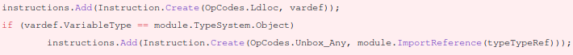
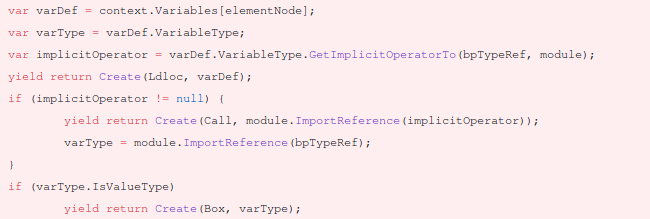

型検証のある仮想機械のコードジェネレータ
Akihiko Odaki <nekomanma@pixiv.com> この作品 (
この作品 (index.html) は
クリエイティブ・コモンズ
表示 - 継承 4.0 国際
ライセンスの下に提供されています.
表示される画像等はそれぞれのライセンスに従います.
pixivでアルバイトやってます
- 2017年7月から
- Rubyで書かれたマイクロブログサービス, Mastodon及びその派生であるPawooとPawoo Musicを開発.
- 2018年8月から
- Unityで作られたVRoid StudioのUI基盤を開発.
今回はVRoid Studioのはなし.
なんでコードジェネレータ?
型検証のある仮想機械のコードジェネレータ
たくさんある.
- 各種コンパイラフロントエンド
- GENERICを出力するGCCフロントエンド, LLVM IRを出力するclangなど.
- JVM, CLI
- Javaコンパイラ, C#コンパイラなど.
- Yacc
- DSLからCのパーサを生成する.
コードジェネレータ制作の機会の増加
みんなコンパイラ作りたい!
DSLは一般的な技法
- よく定義された文法とパーサー
- みんなRuby好き. 標準が必要であればECMAScript.
- 様々な仮想機械
- GCC, LLVM, JVM, CLI (.NET/Mono)… CやC++も.
型検証のあるターゲット
なぜかしらないけどみんな型をつけたがる
性能が要求される場面では型がついたターゲットが候補になる.
LLVMなら強力な最適化を施した上で機械語が出力できる.
Monoならインタプリタ, JIT, AOTの多様な選択肢がある.
コンパイラ技術を持たない人間
一方で, コンパイラ技術をもつ人間は少ない.
行き当たりばったりで開発すると死ぬ.
型はやばい.
実例
UI基盤 Mux
VRoid Studioでは独自のUIフレームワークを開発している.
- UnityのUI APIを抽象化
- Unity Editorの支援を最大限に受けられる.
(インスペクターやプロファイラーなど) - Xamarin.Formsを活用
- 成熟している. (たぶん)
Muxの機能とXamarin.Forms
- データバインディング
- データテンプレート
これらをXAMLによって宣言的に記述できる.
実質Vue.js
Xamarin.Formsによって支えられている.
<c:ArrayList>
<n:Target P="hello" />
<DataTemplate>
<n:Target x:DataType="n:Source" P="{Binding Q}" />
</DataTemplate>
</c:ArrayList>new ArrayList {
new Target { P = "hello" },
new DataTemplate(() => {
var target = new Target();
target.SetBinding(Target.PProperty, new TypedBinding<Source, string>(
source => source.Q,
(source, value) => source.Q = value,
new[] {
new Tuple<Func<TSource, object>, string>.Create(
source => source.Q, "Q") }));
return k;
})
};DSLとしてのXAML
テンプレートやバインディングを簡潔に記述できる.
データとビューを分離したいというUI制作の要求に応える.
実行環境
Mono
Common Language Infrastructure (CLI)
- 高度な型システム (Common Type System, CTS)
- スタックマシン (Virtual Execution System, VES)
コンパイラ vs インタプリタ
Xamarin.FormsにはXAMLコンパイラとインタプリタが存在する.
インタプリタはC#コードを参照するためにリフレクションが多発して遅い.
リフレクションはC#コードをAOTコンパイル (IL2CPP) した場合問題になる.
静的な型の解決による利点
リフレクションを避けることでパフォーマンスが上がる.
静的に型を検証することで誤りを早く発見できる.
静的な型の解決方法
- 型推論
- 型を記述する
Xamarin.Formsでは極めて簡易ではあるがその両方を用いている.
型推論
一部の "Markup Extension" は入力する値の型と出力する値の方が決まっている.
例: 型を表す x:Type
{x:Type n:Target}- 入力
"n:Target"(System.String)- 出力
typeof(Namespace.Target)(System.Type)
型を記述する
データバインディング対象の型をx:DataType属性で指定できる.
<n:Target x:DataType="n:Source" P="{Binding Q}" />target.SetBinding(Target.PProperty, new TypedBinding<Source, string>(
source => source.Q,
(source, value) => source.Q = value,
new[] { new Tuple<Func<TSource, object>, string>.Create(source => source.Q, "Q") }));もし解決した型情報に矛盾があったら?
CLIの場合, 型情報はmetadataとして出力され, VESによって検証される.
コードの信頼性を実行直前に保証できる.
これを活用してユーザーモードとカーネルモードの分離をソフトウェアで実現するSingularityというプロジェクトもあった.
もし解決した型情報に矛盾があったら?
VESはあくまで検証のみを行う.
ありがちな型変換を自動でしてくれるようなことはない.
そのまま出力するとランタイムが型検証を行った際に例外が発生する.
(System.InvalidProgramException)
もし解決した型情報に矛盾があったら?
Monoの場合, ランタイムの型検証が不完全だったため, 「間違ってるコードは確実に実行されない」という保証もなかった.
型システムの複雑さ
ターゲットの型システム (CTS) に合わせなければならない.
Inheritance, generics, value type, object type, managed/unmanaged pointer type, …
つらい.
「暗黙の型変換」
DSLを自分で設計している場合, 「暗黙の型変換」はなくすことができる.
「暗黙の型変換」がなければ検証さえ確実に行なえば良い.
「暗黙の型変換」
実際には汎用プログラミング言語と相互運用性を確保する必要がある.
特にプログラマにとって似たような書き心地であることは重要.
つらい.
C#で「暗黙の型変換」が発生する例
System.ValueTypeとSystem.Object(boxing/unboxing)- 多くの場合
System.Objectが全ての基底クラスのように扱えるが, 実際は異なる.
C#で「暗黙の型変換」が発生する例
System.ValueTypeと&System.ValueType(C#のref)- 普段
System.ValueTypeとして扱っているものはthisであるとき&System.ValueTypeになるので呼び出し前に変換が必要.
いきあたりばったりな開発は不具合をうむ
「既存のコンパイラの出力を逆アセンブルしてまねすればいい」
しかしコンパイラの出力は指定された型に特化している.
異なる型の値を入力すると失敗する.
いきあたりばったりな開発は不具合をうむ
型を検証する必要がある.
変換するコードを出力する必要がある.
Xamarin.FormsのXAMLコンパイラではこれらの処理について一貫性がなく多くの不具合をはらんでいた.
つらい!
1つ1つ対応する必要がある.
しかし型の検証や変換は冗長な操作になる.
- なにも変換してなかったり
- unboxだけしていたり
- 
- implicit castしていたり
- 
重複をなくそう!
local variableを指定した型に変換するLoadAsメソッドを導入.
public static IEnumerable<Instruction> LoadAs(
this VariableDefinition self,
TypeReference type,
ModuleDefinition module)重複をなくそう!
CILはスタックマシンだからレジスタ割り付けを考える必要なしにコード生成を他のメソッドに委譲して, 受け取った命令列を挿入できる.
ldloc.0 // LoadAsが出力
box // LoadAsが出力
call instance void Type::Method(System.Object) // LoadAsを呼び出したメソッドが出力完
まだ終わってない!
今度は型をいちいち指定しなければならなくなった.
つらい.
型を指定する場面を減らす
経験則として, 型に制約が発生する場面はメソッド呼び出しであることが多い.
メソッドを呼び出すときに引数の型を見て, 自動的に変換すればよい.
public static IEnumerable<Instruction> Call(
this MethodReference self,
param VariableDefinition[])型を指定する場面を減らす
さらにこれはlocal variable以外を受け付けるように拡張できる.
public static IEnumerable<Instruction> Call(
this MethodReference self,
param object[])メソッド呼び出しは値を生成する
メソッド呼び出しは値を生成する. じゃあメソッド呼び出しを Call メソッドに渡して…
「メソッド呼び出しを渡す」?
手続きの限界
引数で指定された情報をもとに命令列を返すという手続きを単位とした重複の除去はもはや不可能.
Callをメソッドではなくオブジェクトに.
interface ICall
{
IEnumerable Arguments;
MethodReference Method;
new ();
IEnumerable<Instruction> GenerateIL();
}(new Call(ImportInstanceMethodReference(
result: module.TypeSystem.String,
type: module.TypeSystem.Object,
name: "ToString",
arguments: new[] { module.TypeSytem.Object }),
{
new Call(ImportInstanceMethodReference(
result: module.TypeSystem.Double,
type: module.ImportTypeReference("System", "Math"),
name: "Max"
result: module.TypeSystem.Double,
arguments: new[] { new ArrayType(module.TypeSystem.Double) })
{ new[] { 0d, 1d } }
}).GenerateIL()木
Call: instance System.Object System.Object::ToString()
+-Call: System.Double System.Math::Max(System.Double[])
+-0d
+-1d型とスタックマシン
型をつけることで値に強い依存関係が生まれる.
木をつくることで依存関係を簡潔に表せる.
スタックマシンなら簡単にコードを生成できる.
先行例: Expression Tree
考察
- リファクタリングは辛い
- 最初の設計で型は意識すべき.
- 型をそこまで気にしなくてもいい場合もある?
- 入力の型が明確な場合 (暗黙の型変換がない), 扱う型が少ない場合.
考察
- スタックマシンじゃなかったら?
- 仮想機械ならレジスタマシンでも無限のレジスタを用意していたり, SSA (変数への代入が1回に制限) だったりするので, 一時変数を大量に作ればレジスタの割り当てなどは問題にならない.
参照
参照
ライセンス
Dragon.svg- Apple Inc.によりライセンスされています.
cts.svg- Ecma Internationalによりライセンスされています.
iTunesArtwork@2x- Xamarin Incによりライセンスされています.
ライセンス
mono-gorilla.svg- Creative Commons Attribution-Share Alike 3.0 United States Licenseでライセンスされています.
unity-logo-white.svg- Unity Technologiesによりライセンスされています.